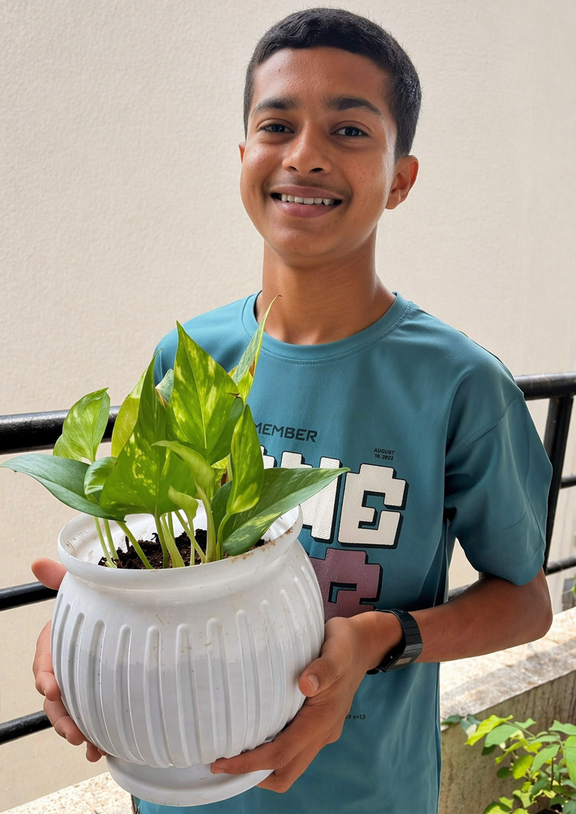

Plant Doctor 🪴
Home |
Plants |
About |
Contact
Welcome to Plant Doctor Hub! Learn how to grow and care for plants easily 🌱



🩺 Check Your Plant Health
Is your plant not growing? Leaves turning yellow? Find solutions here.
🌿 Quick Tips
- Do not overwater plants
- Keep plants in sunlight
- Use good soil
🌼 Popular Plants
Money Plant
Snake Plant
Ananta Plant
Jade Plant
Adenium Plant
Detailed Information about Plants 🌱
- Photosynthesis: The fundamental process where leaves, acting as food factories, convert light energy into
chemical energy.
- Essential Nutrients: Plants require sunlight, water, air, and nutrients : Nitrogen, Phosphorus, Potassium to
grow.
- Root & Stem Function: Roots anchor plants and absorb water/minerals, while stems transport these nutrients
and provide structural support.
- Transpiration: Plants release water vapor through their leaves, which cools the plant and contributes to the
water cy
cle.
- Respiration & Oxygen: While plants produce oxygen during the day via photosynthesis, they also consume
oxygen
- Vascular System: Most plants have vascular tissues (xylem and phloem) that transport water, salts, and
sugars throughout the plant.
- Flowering Plants (Angiosperms): These constitute 90% of plant life and are essential for food production and
ecosystem stability.
- Soil Conservation: Plant roots hold soil in place, preventing erosion and maintaining fertility.
Environmental Indicators: Plants act as bioindicators, helping to assess environmental health and changes.
Scroll to Top
☎️ Contact Us
📍 Plant Doctor, Maharashtra, India
📧 saihole2010@gmail.com
📱 9975402726
© 2026 Plant Doctor | Made by voyager2010